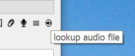
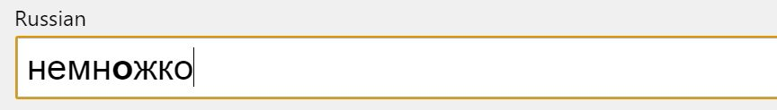
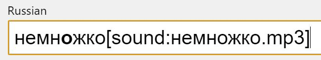
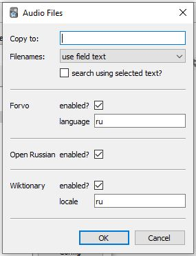

Audio Files provides a simple mechanism to download sound data into Anki cards.
Usage
It adds a button to the editor to use during note editing to search for audio data using the text in the current field.

A configuration option is provided to make the search use selected text if a text selection has been made.
The audio file content is uploaded to Anki and a [sound:...] element appended to the text. That can be cut&pasted into a separate field for
sound if desired, making a quick and simple process for getting sound data into your notes.
For instance, for a field containing "немножко" the result of using this add-on with the cursor in the field would be that the field contains
"немножко[sound:немножко.mp3]" and the audio data is copied to Anki's media folder.


The audio data is also copied to a local working folder - by default the system location for temporary data, but the folder used can be
changed via a configuration parameter.
Configuration
A simple dialog has been provided to make configuration changes.

Select 'search using selected text' to make the search use selected text instead of the whole field value if a text selection has been made.
3 sources of data are currently used, Forvo, Wiktionary and Open Russian - data sources can be separately enabled or disabled.
(The addon has been designed to make it easy to add code for using additional data sources.)
For Wiktionary the target language to search is a configuration option - it should match the code used by Wiktionary to specify locale,
eg "en-uk" for UK English. The default is 'ru'.
For Forvo the target language to search is a configuration option - it should match the code used by Forvo to search by language.
The default is 'ru'.
Instead of using the word as the filename the data can be saved with a random filename by setting the 'filenames' configuration option
to 'random'